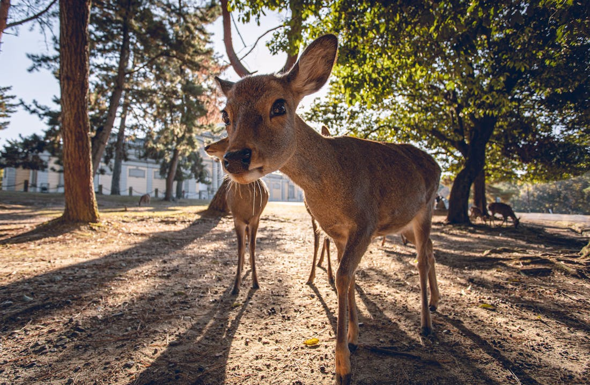
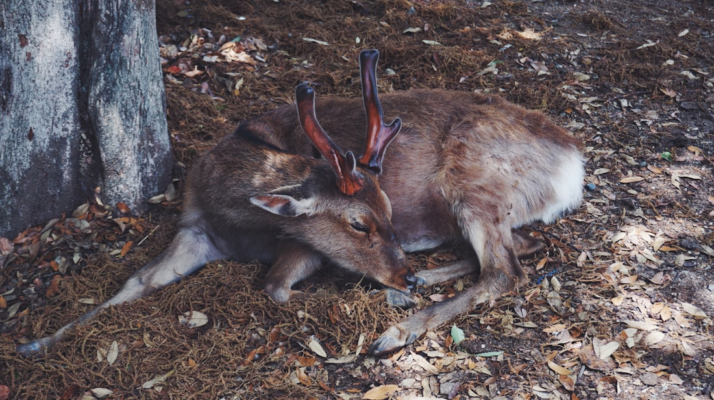
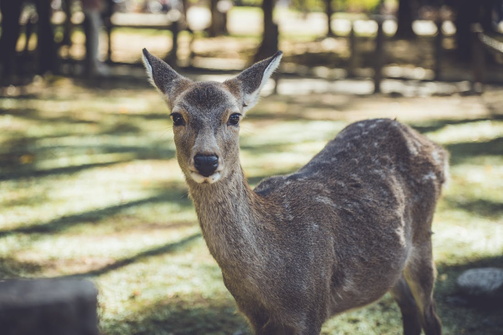
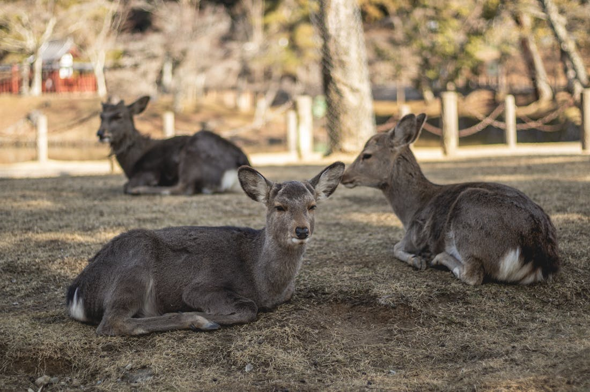
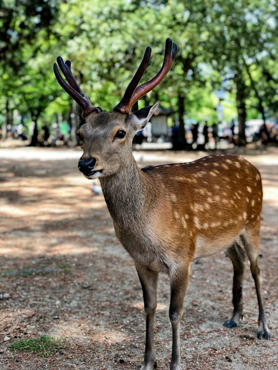
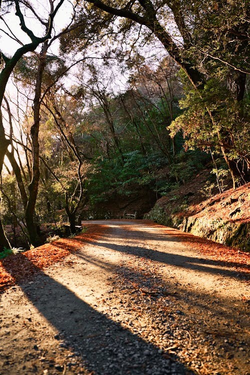
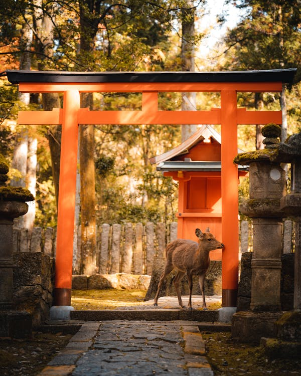
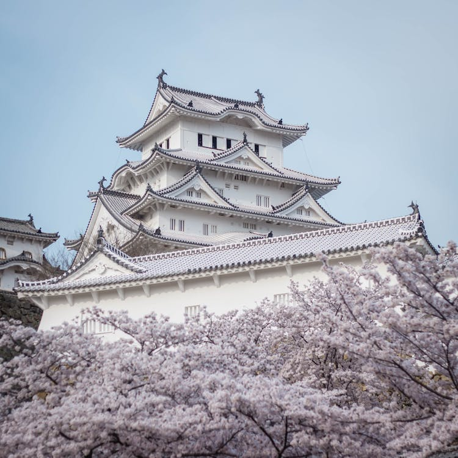

Sacred deer roaming free at UNESCO temples, then Japan's greatest feudal castle.
From deer feeding at Tōdai-ji to the white castle above the cherry blossoms.








Nara in the morning before the tour buses, Himeji Castle in the afternoon. Perfect timing.
Usually responds within 2 hours · WhatsApp preferred